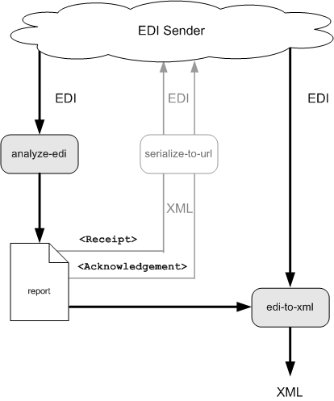

Analyzing EDI to XML Conversions
DataDirect XQuery provides several ways to convert non-XML data to XML, including using the converter URI in document and collection functions, as well as built-in functions ddtek:convert-to-xml, and ddtek:analyze-edi-from-* and ddtek:edi-to-xml-from-*.
This section describes how to use DataDirect XQuery ddtek:analyze-edi-from-* and ddtek:edi-to-xml-from-* built-in functions to analyze and convert EDI to XML. It covers the following topics:
Overview
The following illustration provides an overview of how you can use DataDirect XQuery built in functions to analyze and convert EDI to XML. It shows EDI being provided by some entity – an EDI document, EDI data stored on a file system, or EDI provided by a Web service, for example – being passed to the ddtek:analyze-edi-from-* and ddtek:edi-to-xml-from-* functions. The same EDI stream is specified for each function.
EDI Analysis
First the EDI data stream is analyzed by the ddtek:analyze-edi-* function. The ddtek:analyze-edi-* function produces an XML report that, among other things, identifies any messages that contain errors. You can write the report to any output you choose – you might want to review the report before converting the EDI to XML, for example – but it is written as a document node by default.
EDI Conversion
Once the analysis is complete, the analysis report is passed to the ddtek:edi-to-xml-* function, along with the EDI data stream. The ddtek:edi-to-xml-* function uses the errors identified in the analysis report to filter the EDI, preventing messages containing errors from being converted to XML.

Receipt and Acknowledgement Messages
The analysis report includes a Response element; this element contains Receipt and Acknowledgement subelements. Each subelement holds a complete EDI message in XML format that can be easily manipulated using XQuery and then serialized to EDI to communicate with the EDI sender whether the transmission was accepted or rejected.
Receipt messages are used to notify the sender that an EDI transmission has been received; acknowledgement messages are used to notify the sender of those messages in the EDI transmission that were rejected because of errors, as well as the nature of the errors. Formats for receipt and acknowledgement messages are dialect-specific.
Supported EDI Dialects
The ddtek:analyze-edi-from-* and ddtek:edi-to-xml-from-* built-in functions can be used to convert EDI to XML (and not XML to EDI) for the following EDI dialects:
For More Information
To learn more about analyzing EDI before converting it to XML, including details of the analysis report, see the DataDirect XML Converters User’s Guide and Reference manual. DataDirect XML Converters documentation is installed as part of the DataDirect Data Integration Suite, of which DataDirect XQuery is a part; you can also find DataDirect XML Converters product documentation on the DataDirect Web site.
Built-in EDI Analysis and Conversion Functions
DataDirect XQuery built-in functions for converting EDI to XML:
EDI Analysis Functions
DataDirect XQuery ddtek:analyze-edi-from-* functions, ddtek:analyze-edi-from-string and ddtek:analyze-edi-from-url, analyze an EDI stream and generate a report that describes the errors, if any, they detect. These functions can be used in standalone fashion to generate the analysis report, but they are designed to be used with ddtek:edi-to-xml-from-* functions as part of the process to convert EDI to XML.
EDI Conversion Functions
DataDirect XQuery ddtek:edi-to-xml-from-* functions, ddtek:edi-to-xml-from-string and ddtek:edi-to-xml-from-url, take the report generated by the ddtek:analyze-edi-from-* functions and use it to filter detected errors from the EDI before converting it to XML. The ddtek:edi-to-xml-from-* functions cannot be used alone to convert EDI to XML – you must pass the report generated by the ddtek:analyze-edi-from-* functions.
Specifying the EDI Stream and EDI Conversion Settings
The EDI stream specified in the ddtek:edi-to-xml-from-* functions must be the same as that specified in the ddtek:analyze-edi-from-* functions for a given XQuery.
For this reason, it is recommended that you use the ddtek:analyze-edi-from-* and ddtek:edi-to-xml-from-* functions in pairs – ddtek:analyze-edi-from-string and ddtek:edi-to-xml-from-string, and ddtek:analyze-edi-from-url and ddtek:edi-to-xml-from-url, for example.
The same is also true for any conversion properties you specify – any conversion properties specified in the analysis function must also be specified in the conversion function.
To learn more about conversion properties, see the section "EDI XML Converter Properties" in the DataDirect XML Converters User’s Guide and Reference manual. DataDirect XML Converters documentation is installed as part of the DataDirect Data Integration Suite, of which DataDirect XQuery is a part; you can also find DataDirect XML Converters product documentation on the DataDirect Web site.
Examples
The following examples show how to use DataDirect XQuery analyze EDI and convert EDI built-in functions to convert EDI to XML.
EDI Specified as a URL
In this example, the EDI document code99.x12 is converted to XML:
let $edi := "EDI:tbl=yes?file:///c:/EDI/code99.x12" let $report := ddtek:analyze-edi-from-url($edi) let $ack := $report/AnalyzeReport/Response/Acknowledgement/X12 let $receipt := $report/AnalyzeReport/Response/Receipt/X12 let $xml := ddtek:edi-to-xml-from-url($edi, $report) return( ddtek:serialize-to-url($report ,"file:///c:/EDI/code99.x12.report.xml", "") ,ddtek:serialize-to-url($xml ,"file:///c:/EDI/code99.x12.xml", "") ,ddtek:serialize-to-url($receipt,"file:///c:/EDI/code99.rec.x12","method=EDI" ) ,ddtek:serialize-to-url($ack ,"file:///c:/EDI/code99.ack.x12","method=EDI") )In this example, the XQuery produces four files:
- code99.x12.report.xml – The analysis report generated by the ddtek:analyze-edi-from-url function.
- code99.x12.xml – The XML generated by the ddtek:edi-to-xml-from-url.
- code99.rec.x12 – The receipt message rendered as an XML document.
- code99.ack.x12 – Acknowledgement messages, one for each message in the EDI data stream containing an error, rendered as an XML document.
As noted in Receipt and Acknowledgement Messages, the receipt and acknowledgement messages are dialect-specific. In this example, which uses the X12 EDI dialect, the receipt message conforms to the TA1 message type, and the acknowledge message conforms to the 997 message type. The ddtek:serialize-to-url function is used to convert code99.rec.x12 and code99.ack.x12 from XML to EDI for transmission back to the EDI sender.
EDI Specified as a String
This example is similar to the first, but this instance the EDI is stored in memory as a string:
let $edi := "ISA:00: :00: :01:1515151515 :01:5151515151 :041201:1217:U:00403:000032123:0:P:*~GS:CT:9988776655 :1122334455:20041201:1217:128:X:004030~ST:831:00128001~BGN :99:88200001:20041201~N9:BT:88200001~TRN:1:88200001~AMT :2:100000.00~QTY:46:1~SE:7:00128001~GE:1:128~IEA:1:000032123~" let $url := "EDI:tbl=yes" let $report := ddtek:analyze-edi-from-string($url, $edi) let $ack := $report/AnalyzeReport/Response/Acknowledgement/X12 let $receipt := $report/AnalyzeReport/Response/Receipt/X12 let $xml := ddtek:edi-to-xml-from-string($url ,$edi, $report) return( ddtek:serialize-to-url($report ,"file:///c:/EDI/code99.x12.report.xml", "") ,ddtek:serialize-to-url($xml ,"file:///c:/EDI/code99.x12.xml", "") ,ddtek:serialize-to-url($receipt,"file:///c:/EDI/code99.rec.x12","method =EDI") ,ddtek:serialize-to-url($ack ,"file:///c:/EDI/code99.ack.x12", "method=EDI") )